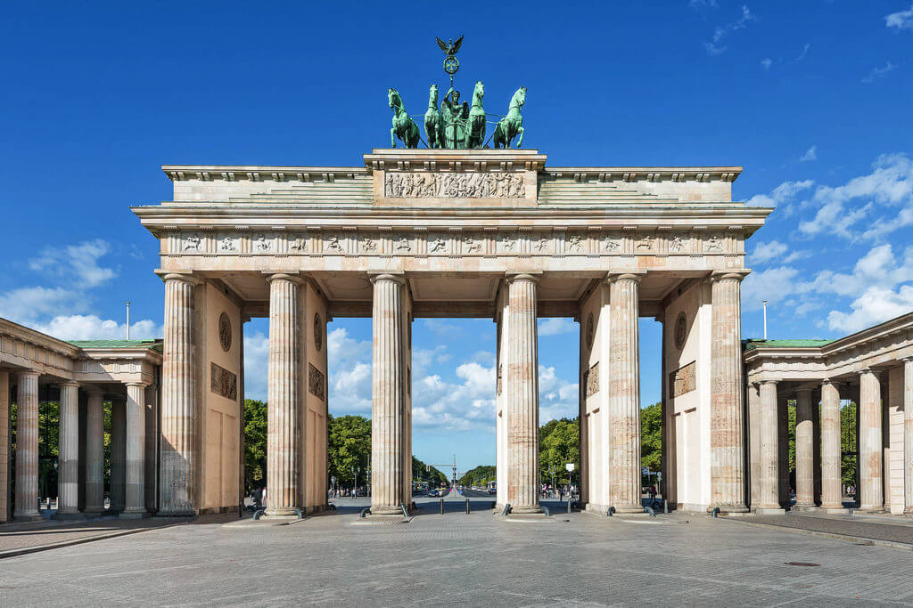

Русское название «Германия» происходит от латинского «Germania», которое восходит к сочинениям античных авторов I века новой эры и образовано от этнонима «германцы» (лат. Germanus). Впервые название было употреблено Юлием Цезарем в «Записках о галльской войне» относительно племён, проживавших за Рейном. Само слово, вероятно, имеет нелатинские корни и происходит от кельтского «gair» («сосед»)[17]. По-немецки государство называется «Deutschland» (от прагерм. Þeudiskaz). «Deutsch» (от прагерм. Þeodisk) первоначально означало «имеющий отношение к народу» и подразумевало в первую очередь язык[18]. «Land» означает «земля, страна». Современная форма написания названия страны используется с XV века. Этноним «немец» происходит от «немой». Так на Руси называли иноземцев, не знающих или плохо знающих язык, и потому по большей части молчавших. В СССР на русском языке использовалось название «Федеративная Республика Германии». Такая форма, например, использована в «Большой советской энциклопедии». После присоединения в 1990 году Германской Демократической Республики к Федеративной Республике Германия было принято решение по взаимной договорённости правительств Германии и России не склонять слово «Германия» в официальном названии государства[19][20]. Правильно: «Федеративная Республика Германия»[21] (а не «Федеративная Республика Германии»). Сокращение «ФРГ» активно использовалось в СССР и в ГДР и сегодня используется в русском языке. В самой Германии в официальном языке это сокращение (BRD) использовать не принято и употребляется лишь полная форма названия или фраза «федеративная республика» (нем. Bundesrepublik), когда понятно, что речь идёт об этой стране.
Первые упоминания о древних германцах появились в трудах древних греков и римлян. Одно из первых упоминаний о германцах относится к 98 году. Оно было сделано римским летописцем Тацитом (лат. Tacitus). Вся территория современной Германии к востоку от Эльбы (славянской Лабы) до X века была заселена славянскими племенами[23]. (см. подробнее: полабские славяне). К XII—XIV векам эти земли постепенно вошли в состав тех или иных немецких государственных образований, составлявших так называемую Священную Римскую Империю. По мере пребывания этих территорий в составе немецких государств за несколько столетий местные славяне постепенно практически полностью были ассимилированы немцами. Этот процесс растянулся до позднего Средневековья и начала нового времени, а местами, с последним, ещё не до конца ассимилированным славянским народом Германии — лужичанами, длится до сих пор. После распада Римской империи в Западной Европе образовалось Франкское государство, которое спустя три века, при Карле Великом, превратилось в империю (800 год). Империя Карла охватывала территории ряда современных государств, в частности Германии. Однако империя Карла Великого просуществовала недолго — внуки этого императора поделили её между собою, в результате чего образовались три королевства — Западнофранкское (впоследствии Франция), Восточнофранкское (впоследствии Германия) и Срединное королевство (вскоре распавшееся на Италию, Прованс и Лотарингию). Карта Франкской империи после Верденского договора 843 года. Традиционно датой основания Германского государства принято считать 2 февраля 962 года: в этот день восточнофранкский король Оттон I был коронован в Риме и стал императором Священной Римской империи; эта империя представляла собой конфедерацию независимых государств, каждое из которых имела свою армию и чеканила свою монету. К XIV—XV вв. бывшие племенные герцогства Франкония и Швабия, распались на множество графств, прелатств, вольных городов, рыцарских и крестьянских округов, в Баварии и Саксонии, наоборот сильная власть герцогов вновь восстановилась. Во главе Священной Римской империи стоял император, избираемый советом курфюрстов, имелся орган, представлявший земли, — Рейхстаг (нем. Reichstag). Многие земли являлись сословными монархиями.
Северная часть Германии представляет собой сформировавшуюся во время ледникового периода низменную равнину (Северо-Германская низменность, самая низкая точка — Нойендорф-Саксенбанде в Вильстермарше[de], 3,54 м ниже уровня моря). Поверхность Северо-Германской низменности сохранила следы древнего оледенения — цепочки невысоких моренных гряд и холмов. Западную часть низменности занимают болотистые низины — марши, образование которых вызвано опусканием платформы. В центральной части страны к низменности с юга примыкают покрытые лесом предгорья, а южнее начинаются Альпы. Самая высокая точка на территории Германии — гора Цугшпитце, 2962 м.
По территории Германии протекает большое количество рек, наиболее крупными из которых являются: Рейн, Дунай, Эльба, Везер и Одер, реки соединены каналами, наиболее известный канал — Кильский, который соединяет Балтийское и Северное моря. Кильский канал начинается в Кильской бухте и оканчивается в устье реки Эльба. Самое крупное озеро в Германии — Боденское, площадь которого 540 км², а глубина 250 м.
Германия находится в умеренном климатическом поясе, на севере климат морской, южнее переходит в умеренно-континентальный. С этим связано то, что погода часто носит переменчивый характер. Посреди лета может быть тепло и солнечно, но уже на следующий день может стать холодно и пойти дождь. По-настоящему экстремальные природные явления (сильные засухи, торнадо, штормы, сильный мороз или жара) относительно редки. Средние температуры июля от +14 в горах до +22 °C в долинах. Средние температуры января от +4 в долинах до −5 °C в горах. Среднегодовая температура +5-+10 °C. Самая низкая температура в Германии составила −46 °C, такой показатель был зарегистрирован в XX веке на юге страны, в горной её части на высоте 1601 м над уровнем моря в районе с координатами около 47ºс. ш. и 12ºв. д. у озера Фунтензе.
В Германии насчитывается 14 национальных парков, 19 биосферных резерватов, более 100[22] природных парков и множество других охраняемых природных территорий и памятников природы.
Символ столицы Германии, с 1989 года символ воссоединения страны. Построил архитектор Карл Готтгард Лангганс. Проект ворот он делал по мотивам проходов Акрополя. Сооружение в стиле классицизма великолепно сочетается с остальными зданиями на Парижской площади. Украшением ворот является квадрига высотой 6 метров с колесницей, которой управляет Виктория – богиня победы. Барельефы внутренних стен изображают подвиги Геракла.
